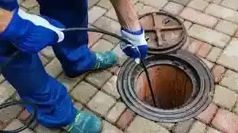

Snaking and Hydro Jetting Services in San Diego
Hydro-jetting is a state-of-the-art drain cleaning technique that thoroughly cleans and flushes your pipes using high-pressure water.
At EZ Heat and Air, we specialize in providing reliable hydro-jetting and traditional snaking services for residents in San Diego.
Our team has the skills, equipment, and experience to deliver effective and long-lasting solutions for all your drain-cleaning needs.
San Diego Hydro-Jetting & Snaking Specialties
Residential Services For Your Home
Our Residential Snaking and Hydro-Jetting Services in San Diego are designed to keep your home’s plumbing system running smoothly.
Commercial Solutions For Businesses
Our Commercial Snaking and Hydro-Jetting Services are tailored to meet the unique plumbing needs of businesses throughout San Diego.
Standard Services For Everyday Clogs
San Diego Hydro-Jetting Services are perfect for tackling everyday clogs in your plumbing system using reliable techniques.
Heavy-Duty Services For Blockages
Our Heavy-Duty Services for Stubborn Blockages are designed to tackle the toughest plumbing issues when regular methods aren’t enough.
Affordable Snaking and Hydro-Jetting Services in San Diego

At EZ Heat and Air, we offer a wide range of snaking and hydro-jetting services for both residential and commercial properties. Our team of experienced professionals is equipped with the latest technology.
We also provide 24-hour emergency drain cleaning, ensuring that your plumbing issues are addressed quickly and efficiently, no matter when they occur.

FREE
Estimate
Request a quote and get a free estimate for installation, repair, and replacement services from professionals

FREE
Service Call
From plumbing repairs to full replacements, connect with our experts to inquire about services at zero charges

15%
Discount Available
15% Off to the Police, Military, Fire Seniors and Teachers for Services up to $1000.

FINANCING
Available
Overcome financial barriers and keep your plumbing system up to date with our alternative financing options.

24/7
Service
Same-day Plumbing Service For Any Issue Or Concern Related To Leakage, Clogging, Or Malfunctioning Of Appliances.
Don't Let Plumbing Issues Interrupt Your Comfort & Budget
CALL EXPERTS NOW
 (760) 392 7616
(760) 392 7616
What Our Clients Say About Us

"I’ve had recurring drain issues for years... My drains have never been clearer!"
Sarah S. - San Diego
"Great service from start to finish! I really appreciated the transparency and honest pricing."
James D. - San Diego
Why Choose Our 24-Hour Drain Snaking and Hydro-Jetting Services?
Exceptional Quality
We are committed to delivering top-notch plumbing services that exceed your expectations every time.
Cleanliness and Respect
Our technicians take great care to maintain a clean workspace and treat your home with the utmost respect.
Transparency and Honesty
At EZ Heat and Air, we believe in clear communication and honest pricing with no hidden fees.

FAQs
Hydro-jetting is a high-pressure cleaning technique used to clear stubborn clogs. Consider it if you're experiencing frequent backups or want proactive maintenance.
Yes, our trained technicians assess your plumbing before using any techniques to ensure no damage occurs.